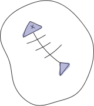
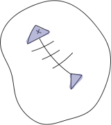

overview
코스메틱 브랜드로써, 자사의 제품과 브랜드의 신념이
더욱 더 돋보일 수 있는 디자인을 위해 리뉴얼을 진행했습니다.
concept
'Self confidence is the best makeup!'
클리오 코스메틱의 신념에 따라
주 이용고객인 20 - 30대 여성에게 뜻을 전할 수 있는 디자인을
했습니다.
color system
- #F5EDE0
- #E28413
- #6D6466

project
반응형 웹사이트 리뉴얼
work
디자인 100% 코딩 100%
period
1Week
Typography
-
- KOREAN
- Pretendard
클리오 킬커버 파운데이션
클리오 킬커버 파운데이션
클리오 킬커버 파운데이션
-
- ENGLISH
- Merriweather
clio cosmetic
clio cosmetic
clio cosmetic
Custom filtering
사용자로 하여금 원하는 카테고리에 맞게 선택 후 제품을 선택할 수 있도록 필터링 시스템을 디자인했습니다
Layout Grid
1920px
1400px

Epilogue
클리오 웹사이트 리뉴얼을 진행하면서
주 타겟층이 확실한 브랜드의 특성에 맞춰 디자인을 한다는 것에 대해
깊이 고민해 볼 수 있던 작업이였습니다.
또한 반응형 작업을 통해 여러 스마트기기에 대응 할 수 있는
웹사이트 제작에 큰 흥미를 가질 수 있었습니다.